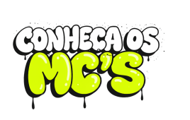
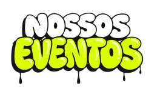

as vozes das ruas transforma cidades
O Grajaú Rap City é um evento de batalhas de rima na zona sul de São PAulo, Ele existe desde 2017. É um evento que celebra a cultura do rap e da periferia, reunindo artistas, batalhas de rima e o público apaixonado pela arte urbana. Além de dar visibilidade aos talentos locais, fortalece a comunidade e mostra a força da cultura hip-hop.
Foi criado por um coletivo de artistas locais, incluindo nomes como JPA, Gah MC e Ladakipnis.


Do Bronx para o mundo
O Hip Hop nasceu nos anos 70 no bairro do Bronx, em Nova York, entre jovens negros e latinos que viviam em meio à pobreza, à violência e à falta de oportunidades. Um dos pioneiros foi DJ Kool Herc, que organizava festas de rua repetindo os "breaks" instrumentais enquanto o público rimava e dançava — assim nascia uma cultura inteira.
O hip hop chegou ao Brasil nos anos 80, principalmente em São Paulo. As batalhas de rima cresceram muito nas periferias e praças públicas, tornando-se espaços de cultura, resistência e oportunidade para jovens artistas. Um dos lugares mais importantes para o rap brasileiro foi a região da Estação São Bento, onde grupos de hip hop se reuniam para dançar, rimar e trocar experiências.


Os destaques que levantaram o público.


A energia das batalhas vista de perto.

Cada Batalha - Uma Linguagem

Encontros que fortalecem a cultura local.


NÃO PERCA NENHUM EVENTO
Acesse a rede social do Grajaú Rap City e fique por dentro das batalhas da comunidade.